CHAPTER EIGHTEEN

THE CRAZY MIXED-UP WORLD OF COURT CARDS
The convenience of these arrangements is that these cards are suitable as being descriptive, in a rough and empirical fashion, of divers types of men and women. One may say briefly that any of these cards is a picture of the person whose Sun, or whose rising sign at his nativity, falls within the Zodiacal attribution of the card.197
We tend to treat the four aces as if they were each the pure representatives of their element. That is not altogether correct. It is true that they are the purest representatives of their element, but, if they did not contain some minute quantities (and qualities) of the other three elements, they would be unable to combine to form the matter and energy that creates and sustains the phenomenal universe. Simply put, there would be no creation at all if the individual elements remained pure and set completely apart from one another. Water would not be able to combine with air if it didn't have a bit of air already in it to serve as an attractor, and vice versa. In order to manifest a universe, things have to be shaken up. The court cards make four very mixed-up families.
MIX-UP #1: SIXTEEN SUBELEMENTS
Remember that, when we put an ace under our magick microscope, we saw the four court cards of the suit living inside? As the four aces represent the four elements of fire, water, air, and earth, the four court cards in each suit represent the same four elements in subdivisions of their suit. The Knights are the fire subdivision; the Queens are the water subdivision; the Princes are the air subdivision; and the Princesses are the earth subdivision. This gives us sixteen members of the court-card family and sixteen subelemental characteristics that Crowley identifies as types of human beings.
Modern tarot scholars, in particular Linda Gail Walters,198 have done a remarkable job of applying the Jungian personality types as defined by the famous Myers-Briggs type indicators199 to the sixteen court cards. So has psychologist Arthur Rosengarten, who, in his groundbreaking text, Psychology and Tarot,200 discusses these same parallels. I firmly believe that, had the Myers-Briggs concepts been available to Crowley at the time of his writing The Book of Thoth, he would most certainly have referred to them, because they bolster his own theories concerning the personality characteristics of the court cards.
Just as each of our personalities has been molded by an elaborate mixture of factors, including genetics, environment, education, and experience, so each court card is a complex mixture of elemental, planetary, and zodiacal factors. When considering what follows, keep in mind that it is the duty of the elements to “mix” (see tables 14 and 15).
MIX-UP #2: PRINCESSES-QUADRANTS OF SPACE—NOT QUADRANTS OF TIME
The Princesses are the earth subelement of their suits and enjoy a special relationship with their aces. For this reason, they are considered separately from the rest of their families. They and their aces rule quadrants of space (see chapter 11).
The Ace/Princess of Wands rules the celestial quadrant of Cancer/Leo/Virgo and the area of Asia; Ace/Princess of Cups rules Libra/Scorpio/Sagittarius and the Pacific; Ace/Princess of Swords rules Capricorn/Aquarius/Pisces and the area of the Americas; and the Ace/Princess of Disks rules Aries/Taurus/Gemini and the areas of Europe and Africa.
MIX-UP #3: KNIGHTS, QUEENS, PRINCES—QUADRANTS OF TIME
Each Knight, Queen, and Prince rule 30° of the zodiacal year. Chauvinistic logic would suggest that the Knights should predominate in cardinal signs, Queens in fixed signs, and Princes in mutable signs of the zodiac—but chauvinistic logic would be wrong!
To mix things up, the knights dominate the mutable signs: (Knight of Wands, Sagittarius; Knight of Cups, Pisces; Knight of Swords, Gemini; Knight of Disks, Virgo). It is the queens who dominate the cardinal signs: (Queen of Wands, Aries; Queen of Cups, Cancer; Queen of Swords, Libra; Queen of Disks, Capricorn). The princes dominate the fixed signs: (Prince of Wands, Leo; Prince of Cups, Scorpio; Prince of Swords, Aquarius; Prince of Disks, Taurus). Very mixed up.
MIX-UP #4:KNIGHTS, QUEENS, PRINCES—THE ADOPT-A-NEIGHBOR'S-DECAN PROGRAM201
The mixing up doesn't end here. You notice that I used the words “predominate” and “dominate,” rather than “rule.”That is because each of these twelve court cards isn't allowed to completely rule any of the signs of the zodiac; it can only mostly rule a sign of the zodiac. To be precise, each court card rules from 20° of one sign to 20° of the next (see table 14). Even though the Knight of Wands dominates the first 20° (or ⅔) of the mutable fire sign, Sagittarius, he is also forced by the admixture law of the tarot to back up a bit on the zodiac belt and adopt the last decan (period of 10°) of the sign that preceeds Sagittarius. This means the fiery Knight of Wands has to adopt the last decan of the fixed water sign, Scorpio.
The Queen of Cups dominates the first 20° of the cardinal sign Cancer, but she also has to play hostess to (and be colored by) the last 10° of the mutable sign Gemini. This is how the Knights, Queens, and Princes literacy knit the zodiacal year together.
Planets are also assigned to each 10° division (decan) of the zodiac and farther influence the character of these twelve court cards, but I will talk about the planets in chapter 19.
NOW I'M MIXED UP
I know this might at first appear rather complicated and beyond the scope of interest of many of you. If that is the case, I commend you for your patience and willingness to wade through this technical discussion of the complexities of the court cards. Please take comfort in the knowledge that, for the moment, it is not as important for you to completely master all these details as it is for you realize that, if you really wanted to, you could master them.
So, as a reward for your forbearance, I'm going to share with you a little shortcut to understanding the court cards and making them immediately usable in a tarot reading. It starts with Crowley's quote that I used to head this chapter:
The convenience of these arrangements is that these cards are suitable as being descriptive, in a rough and empirical fashion, of divers types of men and women. One may say briefly that any of these cards is a picture of the person whose Sun, or whose rising sign at his nativity, falls within the Zodiacal attribution of the card.
The characteristics of people are a lot easier to remember and understand than the theoretical characteristics of Qabalistic and astrological abstractions. It is enough to remember that each Knight, each Queen, and each Prince is somebody's birthday card. Start with yourself What court card are you? Do my comments describe you? Do Crowley's? If not, feel free to disregard them and give that card your own definition, based on what you know about yourself.
Next, learn the birthdays of people you know—family members, friends, co-workers, enemies, even celebrities or historical characters about whom you know a great deal. Using their date of birth, determine which court cards they are. Chances are that the character traits you and the others exhibit are very similar to the classic descriptions of the cards. What if they are not, however? Hey! Maybe the cards are wrong. After all, people are real characters in a real world; tarot cards are just pieces of painted paper in a box.
To prime the pump for this kind of meditation, I have, in discussing the court cards, included the names of a few stereotypical celebrities and historical personages whose birth dates make them a Knight, Queen, or Prince of the appropriate suit. I realize only too well that these digressions smack of pop-culture dilettantism, and represent a shocking breach of my vow to keep things as “Crowley” as possible. To all the Crowley purists who are affronted by this un-Crowley offering, I offer my sincere apology. To everyone else—have fun.
KNIGHT OF WANDS FIRE OF FIRE
20° Scorpio to 20° Sagittarius
November 13 to December 12
Rules 7 of Cups; 8 of Wands; 9 of Wands
Original Titles: The Lord of the Flame and the Lightning; The King of the Spirits of Fire King of the Salamanders.
Crest: Winged black horse's head.
Symbols: Black horse, waving flames. Club. Scarlet gold cloak.
Hair: Red-gold.
Eyes: Grey or Hazel.
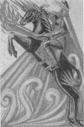
The moral qualities appropriate to this figure are activity, generosity, fierceness, impetuosity, pride, impulsiveness, swiftness in unpredictable actions. If wrongly energized, he is evil-minded, cruel, bigoted and brutal. He is in either case ill-fitted to carry on his action; he has no means of modifying it according to circumstances. If he fails in his first effort, he has no resource.202
Representing fire of fire, the Knight of Wands certainly has the potential of being the strongest member of the court cards. He represents the Yod subdivision of the Yod (of YHVH.) However, it is well for us to remember that, where court cards are concerned, representing something is not the same as being something.
Harris translates the Golden Dawn description into a magnificent and thrilling image that almost leaps off the card. Did I say leap? Explodes is perhaps a better word. The forward thrust of the horse's mane and tail and the hair and beard of the Knight suggests that they aren't so much in the act of jumping as being blown from behind by some unimaginably strong explosive force. It is the portrait of someone who is riding a rocket, and that can be very risky. If the rocket isn't aimed properly, he or she misses the target. If there is not enough fuel, he or she crashes. If there is too much fuel, the person explodes. But if everything goes well, it is the most spectacular of successes.
Robert Fulton, Indira Gandhi, Robert Kennedy, Frank Sinatra, and Mary Queen of Scots all were Knights of Wands.
Fiery reds, yellows, and gold dominate this card as they do all the Wand court cards.
QUEEN OF WANDS WATER OF FIRE
20° Pisces to 20° Aries
March 11 to April 10
Rules 10 of Cups; 2 of Wands; 3 of Wands
Original Titles: The Queen of the Thrones of Flame; Queen of the Salamanders.
Crest: Winged leopard.
Symbols: Leopard. Steady flames. Wand with heavy head or end.
Hair: Red-gold.
Eyes: Blue or Brown.
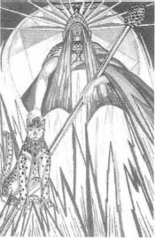
The Characteristics of the Queen are adaptability, persistent energy, calm authority which she knows how to use to enhance her attractiveness. She is kindly and generous, but impatient of opposition. She has immense capacity for friendship and for love, but always on her own initiative.203
The top portion of the card projects such a powerful image of supreme feminine strength and nobility that one could easily see it chiseled in stone as the façade of a great public building or monument. Unfortunately, beautiful as she is, she is somewhat of a façade herself. Crowley goes so far as to suggest she is somewhat of a snob.
When H. Rider Haggard wrote the classic science fiction story She, he must have had the Queen of Wands in mind. The title character is Ayesha, a beautiful, immortal queen who rules a land where she is known as “She Who Must Be Obeyed.” She is a just but ruthless queen who seems to take offense quite easily. She loves her people (in a selfish sort of way), but she is so self-absorbed that, when the opportunity for her to experience true love presents itself, she becomes a cruel, tyrannical, savage monster. This, naturally, results in her unhappiness and eventual destruction. Describing the character represented by this card, Crowley uses a wonderful expression, “when she misses her bite, she breaks her jaw!”204
But that's the downside of this lovely lady. She also can be everything the world needs in a strong woman.
Actress Ursula Andress, who portrayed Queen Ayesha in the 1965 film She, is a Queen of Wands. So was Joan Crawford (a real-life She Who Must Be Obeyed). Two other Queens of Wands (whose laws we obey) were Albert Einstein and Wyatt Earp (although, I probably wouldn't have told Wyatt Earp he was the Queen of anything.)
Fiery reds, yellows, and gold dominate this card, as they do all the Wand court cards.
PRINCE OF WANDS AIR OF FIRE
20° Cancer to 20° Leo
July 12 to August 11
Rules 4 of Cups; 5 of Wands; 6 of Wands
Original Titles: The Prince of the Chariot of Fire; Prince and Emperor of the Salamanders.
Crest: Winged lion's head.
Symbols: Wand and salient flames. Fire wand of Zelator Adeptus Minor.
Hair: Yellow.
Eyes: Blue Grey.
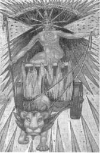
He is romantic especially in matters of history and tradition, to the point of folly, and may engineer “stunts” or play elaborate practical jokes.205
The Ascendant (or the rising sign) in one's astrological natal chart is second only to the Sun sign in importance. Among other things, it represents the native's personality and how they appear to others in the world. Crowley's Ascendant was 3° Leo; consequently, he identified strongly with Leo and with the Prince of Wands, who rules 20° Cancer to 20° Leo.
This card is Crowley's idealized image of himself. First of all, we find his personal seal, the Mark of the Beast, emblazoned upon the breast of the Prince. This device appears in only two other places in the Thoth Tarot—on the Five of Wands (which represents 0° to 10° Leo), and the Ace of Disks, which, by tradition, is the signature card of the deck's creator. The Prince is even seated in Crowley's favorite yogic posture, the Thunderbolt asana.206 Crowley, because he felt he knew himself so well, has a great deal to say about the moral qualities and intellectual paradoxes of this card:
He is often violent, especially in the expression of an opinion, but he does not necessarily hold the opinion about which he is so emphatic…. His character is intensely noble and generous. He may be an extravagant boaster, while slyly laughing both at the object of his boast and at himself for making it…. His courage is fanatically strong, and his endurance indefatigable. He is always fighting against odds, and always wins in the long—the very long—run.207
While Crowley identifies with this card because of his rising sign, it also describes a few other notables whose Sun sign makes them Princes of Wands: Julius Caesar, John Dee, Nelson Mandela, Mick Jagger, Jacqueline Kennedy, Madam Blavatsky, and Christopher Hyatt.
Fiery reds, yellows, and gold dominate this card, as they do all the Wand court cards.
PRINCESS OF WANDS EARTH OF FIRE
Together with the Ace of Wands, rules the Cancer/Leo/Virgo celestial quadrant above the North Pole and the area of Asia.
Original Titles: The Princess of the Shining Flame; The Rose of the Palace of Fire; Princess and Empress of the Salamanders. Throne of the Ace of Wands.
Crest: Tiger's head.
Symbols: Tiger, leaping flames. Gold Altar, long club, largest at bottom.
Hair: Red-gold.
Eyes: Blue.
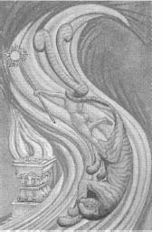
I am a bit worried. The princess is behaving most queer! She won't have any nice tidy lines & I really don't know if she will be alright. She is certainly no relation of the first sample submitted. I think when I have smacked her, I shall have to post her to you, & you can tear her up or retain her as she strikes you. Oh dear I am tired. I have battled with her blaring wriggles till the eye falls out & she has burnt my throat & I can't swallow. 208
—Harris to Crowley, date uncertain.
The Princesses share a special status among the court cards, and Harris seems to have given all four of them the special attention they deserve. They are all breathtakingly beautiful. Placed side by side, they are the four pin-up girls of the Thoth Tarot. The Princess of Wands is especially stunning, and is one more reason the Crowley-Harris deck is banned contraband within so many prisons. Crowley wrote, “This card may be said to represent the dance of the virgin priestess of the Lords of Fire.”209
As the earth subelement of the suit of fire, she not only officiates before the ram's-headed altar as Princess of the flaming sacrifice, but is herself the fuel of the fire. We recognize her in people we meet who are so energetically self-assured, so independent and irrationally audacious that, while inspirational and thrilling, they can be downright dangerous to be around.
When ill-dignified, she is the ultimate drama queen, who is so shallow and self-absorbed that it never occurs to her that nobody is sympathizing with her. Ifleftunchecked, the Princess of Wands gone bad will not only incinerate herself needlessly, in doing so she will also set fire to the whole neighborhood. She can be “cruel, unreliable, faithless and domineering.”210 Know anyone like that?
Princesses do not rule degrees of the zodiacal year, so we have no examples of celebrated personalities who are/were Princesses of Wands.
Fiery reds, yellows, and gold dominate this card, as they do all the Wand court cards.
KNIGHT OF CUPS FIRE OF WATER
20° Aquarius to 20° Pisces
February 9 to March 10
Rules 7 of Swords; 8 of Cups; 9 of Cups
Original Titles: Lord of the Waves and the Waters; The King of the Hosts of the Sea; King of Nymphs or Undines.
Crest: Peacock with open wings.
Symbols: White horse, crab issuing from cup. Sea.
Hair: Fair.
Eyes: Blue.
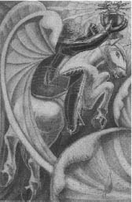
Swiftness and violence ill suit a character naturally placid; it is rare indeed to meet a person who has succeeded in harmonizing these conflicting elements.211
I've gotto be careful with this one. Both mywife and son are the Knights of Cups. Of course, none of the negative qualities of this card pertain to either of them.
Leaping out of the card in the opposite direction than that of the Knight of Wands, the Knight of Cups is a cool contrast to his brother. Fire of water brings to mind water in action—a pelting rain, a gushing spring—and the more patient actions whereby water erodes and dissolves things.
Like most of the court cards, Harris's version respectfully contains all the major features of the Golden Dawn model, including a most beautiful and subtle peacock that seems to be fashioned from a plume of pure water created by the wake of the Knight's movement.
I think Crowley rather liked this fellow, and after all, what's not to like? “He is amiable in a passive way. He is quick to respond to attraction, and easily becomes enthusiastic under such stimulus; but he is not very enduring.”212
We can probably blame the influence of mutable Pisces for throwing her wet blanket on the white horse of our otherwise fiery lord of the waves and the waters. This makes the Knight of Cups a pretty nice guy. He's just not very deep. In fact, the worst name we can call him is “shallow water.” He has a natural innocence and purity that make him likeable, but he's often just not deep enough for those virtues to easily manifest as profound nobility of character. As Crowley says, “His name is writ in water.”213
While this may be somewhat true for natives such as Sonny Bono, Mia Farrow, and Burt Reynolds, there must also be something in the character of this card that engenders the likes of George Washington, Abraham Lincoln, Susan B. Anthony, and Thomas Edison.
Cool blues and blue-greens dominate this card, as they do the other Cups court cards.
20° Gemini to 20° Cancer
June 11 to July 11
Rules 10 of Swords; 2 of Cups; 3 of Cups
Original Titles: The Qreen of the Thrones of Water; Qreen of the Nymphs or Undines.
Crest: Ibis
Symbols: Crayfish issuing from River.
Hair: Gold-brown.
Eyes: Blue.
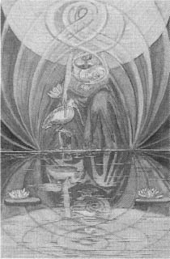
Her image is of extreme purity and beauty, with infinite subtlety; to see the Truth of her is hardly possible, for she reflects the nature of the observer in great perfection.214
The Qreen of Cups is my birthday court card, so please be warned that the objectivity of my comments may be obscured by clouds of narcissism, but honestly, who am I to argue with Crowley?215
Harris's Queen of Cups bears striking similarities to Atu II, the High Priestess. As a matter of fact, if you were to trim the borders of the two cards and place the Queen of Cups upside down above the High Priestess, you would see that they match in a dizzying display of synthetic projective geometry. Both cards present the image of a great cup, the stem of which is formed by the body of a goddesss. Atu II is the cup of the virginal goddess of the Moon; the Queen of Cups is that of the great mother goddess.
Water of water is tantamount to saying reflection of reflection, or mirror to mirror. The Queen of Cups is popular and makes friends easily because, when others look at her, they see only themselves. Crowleys tells us that “She is the perfect agent and patient, able to receive and transmit everything without herself being affected thereby.”216 To liberals, she looks like a liberal; to conservatives, she looks like a conservative, when in truth she may be neither. If ill dignified, she can be dangerous and cruel, distorting the reflections she casts back on her unsuspecting victims, who then see only monsters in the mirror.
My fellow Queens of Cups include Paul McCartney, Jacques Cousteau, John D. Rockefeller, Nikola Tesla, George Orwell, and Gerald Gardner.
Cool blues and blue-greens dominate this card, as they do the other Cups court cards.
PRINCE OF CUPS AIR OF WATER
20° Libra to 20° Scorpio
October 13 to November 12
Rules 4 of Swords; 5 of Cups; 6 of Cups
Original Titles: The Prince of the Chariot of the Waters: Prince and Emperor of the Nymphs or Undines.
Crest: Eagle.
Symbols: Scorpion, eagle-serpent issuing from lake.
Hair: Brown.
Eyes: Grey or Brown.
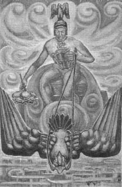
The moral characteristics of the person pictured in this card are subtlety, secret violence, and craft. He is intensely secret, an artist in all his ways…. He is in fact perfectly ruthless.217
With style worthy of a comic book cover, Harris's Prince of Cups makes a spectacular entrance by bursting straight at us from a crashing wave, his chariot drawn by an enormous black eagle. His left hand grasps a cup out of which rises a coiled a snake. In his right hand, he holds an enormous lotus blossom.
I have to believe that Crowley had an unpleasant experience with a Prince of Cups. If everyone born between October 13 and November 12 manifested all the dark and chilling qualities Crowley ascribes to this card, then 1/12 of the population of the planet would be melodrama villains. While that may have been true of Princes of Cups Lee Harvey Oswald and Leon Trotsky, there is still great strength and potential in this card.
Libra passing over to Scorpio is a very strong moment, but the active characteristics of air in the passive environment of water makes an uneasy combination. Like foaming bubbles exploding from an underchilled bottle of champagne, these two elements do not care if they ruin the party or the furniture; they just want to get out and away from each other. Maybe that is why Crowley describes the Prince of Cups as “completely without conscience in the ordinary sense of the word, and is therefore usually distrusted by his neighbors.”218
I've known several Princes of Cups, including my father, and I must say they were indeed men of immense abilities who could not be, as Crowley noted, “relied upon to work in harness.”219 The same could be said of fellow Princes Martin Luther, Oscar Wilde, Friedrich Nietzsche, Timothy Leary, and Pablo Picasso.
Cool blues and blue-greens dominate this card, as they do the other Cups court cards.
PRINCESS OF CUPS EARTH OF WATER
Together with the Ace of Cups, rules the Libra/Scorpio/Sagittarius celestial quadrant above the North Pole, and the area of the Pacific.
Original Titles: The Princess of the Waters; Lotus of the Palace of the Floods; Princess and Empress of the Nymphs or Undines. Throne of the Ace of Cups.
Crest: Swan.
Symbols: Dolphin, Lotus. Sea with spray, turtle from cup.
Hair: Brown.
Eyes: Blue or Brown.
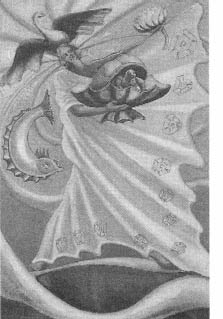
The character of the Princess is infinitely gracious. All sweetness, all voluptuousness, gentleness, kindness and tenderness are in her character. She lives in the world of Romance, in the perpetual dream of rapture.220
I cannot overemphasize the importance of the relationship between the ace of each suit and its Princess. The ace may be beautiful to look at, but, because it is the root—the hidden germ—of its suit and element, it is impossible to understand. The Princess, on the other hand, represents the end product, the crystallization and materialization of what was purely potential in the ace. In the language of religion, the ace may be worshipped, but the Princess can be adored. That being so, it would not be inappropriate for the herald of this card to cry out, “All fall down before Princess of the Waters; Lotus of the Palace of the Floods; Throne of the Holy Grail!” You my think I'm laying it on a bit thick for this young lady, but I assure you, not half as thick as Mr. Crowley did. She's not all dreams, either. As earth of water, she literally can ground vaporous and romantic ideas into manifestation, and provide a fixed and fertile medium where the water-nourished life of ideas can flourish.
Harris's image is one of graceful, fluid movement. The water is alive with large smooth waves that suggest the heavy environment of ocean's depth. The Princess is dancing, her eyes closed, her head thrown back, an expression of pure rapture on her face reminiscent of Bernini's The Ecstasy of Saint Theresa. The scallops of her dress are the same motif found on the Ace of Cups, and the hem is adorned with clear water crystals.
Princesses do not rule degrees of the zodiacal year, so we have no examples of celebrated personalities who are/were Princesses of Cups.
Cool blues and blue-greens dominate this card, as they do the other Cups court cards.
KNIGHT OF SWORDS FIRE OF AIR
20° Taurus to 20° Gemini
May 11 to June 10
Rules 7 of Disks; 8 of Swords; 9 of Swords
Original Titles: The Lord of the Winds and Breezes; King of the Spirits of Air; King of the Sylphs and Sylphides.
Crest: Winged Hexagram.
Symbols: Winged brown horse, driving clouds, drawn brown sword.
Hair: Dark Brown.
Eyes: Dark.
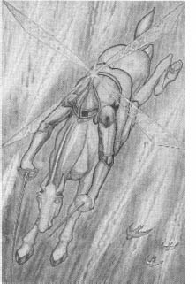
I have done as you suggested to the Swords. Thank you Mr Crowley. You were quite right.221
—Harris to Crowley, date uncertain.
Swords are the suit of air and, as we begin our examination of these cards, I must point out a design motif that appears repeatedly in all the cards of this suit—wings. Lady Harris incorporates angular and highly stylized wings everywhere! They may not always look like wings, but that is what they are.
Beginning with the Knight of Swords, we see that what appear at first to be four propeller blades spinning atop his pointed helmet are actually four triangular wings sprouting from his back. They are transparent and veined, like those of a dragonfly. Perhaps there are only two wings that are moving so fast they appear as four. Please take a moment and look at the Queen, Prince, and Princess of Swords, and locate the marvelous angular wings on these figures. Now look at all the small cards of the suit and see the backgrounds festooned with these stylized wings—some balanced, almost pinwheel in form; some twisted, broken, stretched, and distorted.
It has been suggested that these figures represent magical sigils drawn from planetary kameas, or magical squares. Anyone familiar with the extent (or should I say the limits) of Lady Harris's magical education at the time would not even suggest such a thing.
The Knight of Swords is fire of air, suggestive of a violent wind. The general divinatory meaning of the card can be summed up in one word—attack. “The moral qualities of person thus indicated,” Crowleywarned, “are activity and skill, subtlety and cleverness. He is fierce, delicate and courageous but altogether the prey of his idea, which comes to him as an inspiration without reflection.”222
Famous Knights of Swords include Baron Münchhausen, Arthur Conan Doyle, Pope John Paul II, Malcolm X, Queen Victoria, John Wayne, John F. Kennedy, Marilyn Monroe, and Cher.
Sky blues, yellows, and white cirrus clouds dominate this card, as they do the Queen of Swords.
QUEEN OF SWORDS WATER OF AIR
20° Virgo to 20° Libra
September 12 to October 12
Rules 10 of Disks; 2 of Swords; 3 of Swords
Original Titles: The Queen of the Thrones of Air; Queen of the Sylphs and Sylphides.
Crest: Winged child's head.
Symbols: Head of man severed. Cumulous clouds. Drawn sword.
Hair: Grey.
Eyes: Light Brown.
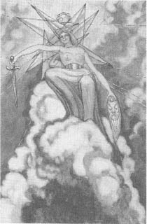
The person symbolized by this card should be intensely perceptive, a keen observer, a subtle interpreter, and intense individualist, swift and accurate at recording ideas; in action confident, in spirit gracious and just.223
This card represents Crowley's Sun sign and so, naturally, it is the most intimidating card in the deck. One look at this lady tells us she means business. Water of air is suggestive of clouds that promise either life-giving rain or the threat of a torrential cloudburst. She holds the severed head of a bearded man in her left hand and the sword that probably did the job in her right. One may think this grisly touch is just another gruesome Crowleyism. It is not. This image is the classic Golden Dawn description of the Queen of Swords, and makes a fundamental Qabalistic statement.
The suit of Swords represents Yetzirah, the formative world—the mind's eye of deity. Swords' and Yetzirah's counterpart in the human soul is the Ruach, the intellect, which is centered in the brain—the human head. Using the sword of discretion and reason, the Queen has separated the higher faculties of the intellect from the influences of the lower nature (the Nephesh, the animal soul). She is quite literally, Crowley points out, the “Liberator of the Mind.”224 The head is that of a bearded man (the Hermit of Virgo perhaps?), the eyes closed peacefully, the face suggesting the trance of deep meditation.
The influence of Virgo moving into Libra gives the Queen of Swords the practicality and grace of a great monarch. This native “should be intensely perceptive, a keen observer, a subtle interpreter, an intense individualist, swift and accurate at recording ideas; in action confident, in spirit gracious and just. Her movements will be graceful, and her ability in dancing and balancing exceptional.”225 If ill-dignified, she can be as cruel and dangerous as she looks.
Crowley's fellow Queens of Swords include Mahatma Gandhi, Eleanor Roosevelt, H. G. Wells, and Stephen King.
Sky blues, yellows, and white cumulus clouds dominate this card.
PRINCE OF SWORDS AIR OF AIR
20° Capricorn to 20° Aquarius
January 10 to February 8
Rules 4 of Disks; 5 of Swords; 6 of Swords
Original Titles: The Prince of the Chariot of the Winds; Prince and Emperor of Sylphs and Sylphides.
Crest: Winged angel's head.
Symbols: Arch Fairies winged. Dark clouds, nimbi, drawn swords.
Hair: Grey.
Eyes: Dark.
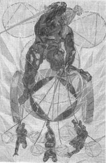
It is easy to be deceived by such people; for the manifestation itself has enormous potency: it is as if an imbecile offered one the dialogues of Plato. They may in this way acquire a great reputation both for depth and breadth of mind.226
An earlier version of this card paints a kinder, gentler picture of the Prince of Swords and the arch fairies who draw his chariot. The final version is full of mad, seemingly futile movement. The geometrical wings of the Prince and the children are enclosed in bright yellow bubbles—air of air. The children pull the chariot “irresponsibly in any direction that takes their fancy; they are not reined, but perfectly capricious. The chariot consequently is easy enough to move, but quite unable to progress in any definite direction except by accident. This is a perfect picture of the Mind.”227
Like a madman whose brain creates only to destroy, we see the Prince with the sword in his right hand, with which he creates ideas and images, and the sickle in his left hand, with which he immediately cuts them down. This sounds like madness, but we are doing the same thing every moment of our waking lives. When the mind is given a creative outlet for this process, such as music, literature, or film making, we discover great genius. Mozart and Mendelssohn were Princes of Swords, as were the great film directors D. W. Griffith and Federico Fellini, and the visionary Emmanuel Swedenborg.
Crowley heaps great praise upon the pure intelligence of the Prince of Swords, but he cannot avoid discussing the futility of thinking about thinking. “He is full of ideas and designs which tumble over each other,” he points out. “He is a mass of fine ideal unrelated to practical effort.”228
The great actor James Dean was a Prince of Swords, and while Jim Stark (the character he played so brilliantly in the film Rebel without a Cause) was fictitious, Dean nonetheless gave profound life to that role. In my mind, it was the perfect tortured portrayal of the frustrations inherent in this card—a performance that I believe, in all likelihood, would have been appreciated by fellow Prince of Swords, Edgar Allan Poe.
Clouds of sharp white ice crystals, yellows, and metallic greens dominate this card.
PRINCESS OF SWORDS EARTH OF AIR
Together with the Ace of Swords, rules the Capricorn/Aquarius/Pisces celestial quadrant above the North Pole, and the area of Americas.
Original Titles: The Princess of the Rushing Winds; The Lotus of the Palace of Air; Princess and Empress of the Sylphs and Sylphides. Throne of the Ace of Swords.
Crest: Medusa's head.
Symbols: Silver altar, smoke. Cirrus clouds. Drawn brown sword.
Hair: Light Brown.
Eyes: Blue.
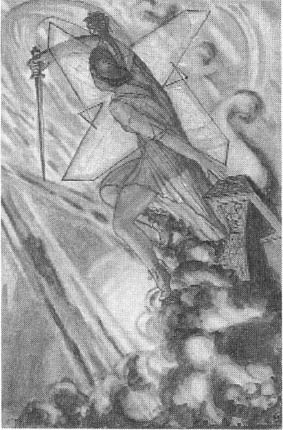
The character of the Princess is stern and revengeful. Her logic is destructive. She is firm and aggressive, with great practical wisdom and subtlety in material things. She shews great cleverness and dexterity in the management of practical affairs, especially where they are of a controversial nature. She is very adroit in the settlement of controversies.229
Rising out of a cloud of dust, Crowley's paradoxical Princess of Swords, earth of air, appears like a beautiful avenging angel. Her head is crowned with the Medusa-headed helmet, which mercifuly is turned away from our view. For if we were to gaze upon its awful face, we would surely be turned to stone. Turning things to stone (“fixation of the volatile”—“materialization of ldea”230) is just part of the job description for Princess of Swords, however.
The suit of Swords (as Ruach, the intellect) is a wonderful aspect of our being because, when we identify with the Ruach, we rise above and separate ourselves from our lower nature, the animal soul (the Nephesh). However, when we identify with the Ruach, we also separate ourselves from the higher parts of our souls that represent greater realities and levels of consciousness than our Ruach is incapable of comprehending. Consequently, the Ruach does everything it can to keep its grasp on our identity. This is why the Eastern mystics warn us that the mind is a great enemy. It must be defeated in battle. When the battle begins, the Ruach naturally sends its finest swordswoman into the field—a warrior-princess who manifests everything that is inherent, yet hidden, in her lord, the ace, a mighty champion of the mind—a Minerva, an Artemis, a Valkyrie,—the Princess of Swords.
Swirling clouds of gray-black dust and violent windbursts darken the heavens and almost completely dominate and obscure what once was the yellows and blues of this suit.
Since Princesses do not rule degrees of the zodiacalyear, we have no examples of celebrated personalities who are/were Princesses of Swords.
KNIGHT OF DISKS FIRE OF EARTH
20° Leo to 20° Virgo
August 12 to September 11
Rules 7 of Wands; 8 of Disks; 9 of Disks
Original Titles: The Lord of the Wide and Fertile Land; The King of the Spirits of Earth; King of the Gnomes.
Crest: Winged stag's head.
Symbols: Light brown horse. Ripe corn land. Scepter with Hexagram of Zelator Adeptus Minor.
Hair: Dark.
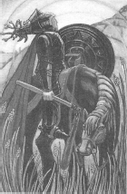
I am doing the King of Pantacles. I didn't like what I had done. Someone has lent me a genuine flail—it is like this [manuscript drawing of flail] a lovely instrument of solid wood. Most difficult to manage.231
—Harris to Crowley, November 3,1939.
The Knight of Disks is unique among his brother Knights. He appears to be the shortest in stature. He rides a workhorse that seems to be more concerned with eyeing the lush grass than with conveying his rider. His helmet is completely raised, and he gazes at the fertile fields and hills, as if in contemplation of harvest, not battle. His flail dangles near the grasses, suggesting the thrashing of wheat rather than the thrashing of heads, and his shield is a disk that could double as a dish that could hold enough food to feed a village. Am I making this up just because I'm hungry and dinner is late? Not at all. Crowley writes that the function of the Knight of Disks “is entirely confined to the production of food.”232
I am sure there are many geniuses and intellectually brilliant individuals whose birthdays fall between August 12 to September 11 (Napoleon Bonaparte, Cardinal Richelieu, Louis the XIV, Bill Clinton, Madonna, and H. P. Lovecraft to name a few). Nonetheless, the natural character of this card is not that of a rocket scientist. The Knight of Disks keeps his nose to the grindstone, and takes little interest in (and has little respect for) intellectual musings or the finer aspects of culture or civilization. If ill-aspected, he will even make ignorance a virtue and take obstinate pride in his own lack of sophistication and subtlety.
Davey Crockett, Annie Oakley, and Country and Western stars Buck Owens, Porter Wagoner, Patsy Cline, and Jim Reeves were all Knights of Disks.
Rich browns, greens, and golden yeUow dominate this card.
QUEEN OF DISKS WATER OF EARTH
20° Sagittarius to 20° Capricorn
December 13 to January 9
Rules 10 of Wands; 2 of Disks; 3 of Disks
Original Titles: The Queen of the Thrones of Earth; Queen of the Gnomes.
Crest: Winged goat's head.
Symbols: Barren land. Light falls on only one side of her face. Scepter with golden orb.
Hair: Dark.
Eyes: Dark.
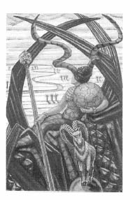
Persons signified by this card possess the finest of the quieter qualities. They are ambitious, but only in useful directions.233
Life-giving water to a thirsty Earth. What a beautiful concept. What a beautiful tarot card. Her dress alone is worth looking at with a magnifying glass.
The genteel author, Jane Austen, is an ideal model for Crowley's characterization of this card, and matches his description in The Book of Thoth perfectly. She was quietly passive—but passivity, Crowley claims, “in its highest aspect.”234 She and many of her characters were “quiet, hard-working, practical, sensible, domesticated.”235
Like Austen herself, however, there is much more to the Queen of Disks than needlepoint and country dances. I believe, at least on one level, Aleister Crowley was having us on when he wrote, “They are not intellectual, and not particularly intelligent; but instinct and intuition are more than adequate for their needs.”236 I think he was getting closer to the truth when he wrote, “She thus represents the ambition of matter to take part in the great work of Creation.”237
Think about that for a moment. That is a force to be reckoned with.
Water of earth manifests in very complex and diverse ways, and these are reflected in the broad spectrum of personalities who can embody the ambition of matter to take part in the great work of creation. A Queen of Disks can be strong and charismatic like her sister Joan of Arc, or just talented and charismatic like Elvis Presley. She can be ruthless and manipulative like Catherine of Aragon, Joseph Stalin, Mao Tse-tung, and Richard Nixon; or sensitive and idealistic like Woodrow Wilson, George Washington Carver, or Carl Sandburg. She can possess instinctual, intuitive, and superior intelligence like Nostradamus, Johannes Kepler, Isaac Newton, and Stephen Hawking; or she can be a giant of creative force like Ludwig Van Beethoven, J. R. R. Tolkien, or Steven Spielberg.
Dark greens and rich browns dominate the foreground of this card.
PRINCE OF DISKS AIR OF EARTH
20° Aries to 20° Taurus
April ll to May 10
Rules 4 of Wands; 5 of Disks; 6 of Disks
Original Titles: The Prince of the Chariot of Earth; Prince and Emperor of the Gnomes.
Crest: Winged bull's head.
Symbols: Flowery land. Bull. Dark scepter with orb and cross. Orb held downward.
Hair: Dark Brown.
Eyes: Dark.
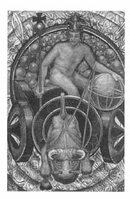
The Prince of Disks is a devil. I've been a whole week on him & he is engendering a nervous breakdown in me coupled with starvation as he gives me no time to eat. He is a bastard. However, I hope I have caught him today. He swells & swells &I can't get him in the picture with al the farm produce & bulls you suggest.238
—Harris to Crowley, date uncertain.
A devil indeed! But what a devil! I don't think it's a good idea to put too many Princes of Disks in the same room. These fellows change the world with their “great energy brought to bear upon the most solid of practical matters.”239 Consider this short roster of Princes of Disks: Marcus Aurelius, William Shakespeare, Catherine the Great, Thomas Jefferson, Robespierre, Ulysses S. Grant, Sigmund Freud, Karl Marx, Nikolai Lenin, Adolf Hitler, Emperor Hirohito, Robert Oppenheimer, Harry Truman, Golda Meir, and Saddam Hussein.
You and I, however, are more likely to run into what I call the “garden variety” Prince of Disks—and by “garden variety” I mean just that. Harris's Prince is seated in a chariot filled with globular seeds that seem to be ready to burst into plants at any moment. He is a very cool character. His eyes are closed in meditation, as if he were mentally directing the brooding fecundity of the entire universe. He is the picture of someone who is in control on the material plane. He may seem a bit dull and emotionless, but he's not. He's just not a snob, and he doesn't bother with things he considers impractical. He's the ultimate handyman. Crowley confirms that assessment, telling us that “He is competent, ingenious, thoughtful, cautious, trustworthy, imperturbable; he constantly seeks new uses for common things.”240
This is the darkest card of the suit of Disks, full of rich browns and blacks.
PRINCESS OF DISKS EARTH OF EARTH
Together with the Ace of Disks, rules the Aries/Taurus/Gemini celestial quadrant above the North Pole, and the area of Europe and AFrica.
Original Titles: The Princess of the Echoing Hills; The Rose of the Palace of Earth; Princess and Empress of the Gnomes. Throne of the Ace of Disks.
Crest: Winged ram's head.
Symbols: Grass. Flowers, grove of trees. Scepter with disk. Disk is as others.
Hair: Rich Brown.
Eyes: Dark.
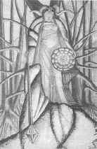
The Princess is now on the stocks. I wish she would not insist on being pregnant. She just will, so now I have let her get on with it. She chatters to me about being mixed up with the Virgin Mary.241
—Harris to Crowley, December 11,1942.
We do not know for certain which card of the Thoth Tarot Lady Harris painted last, but the date of the above note suggests she was working on the Princess of Disks toward the very end of the project. If she did complete the deck with this card, she certainly saved the best for last. For me, the Princess of Disks is the most beautiful female figure in the entire Thoth Tarot. “She is strong and beautiful,” Crowley affirms, “with an expression of intense brooding, as if about to become aware of secret wonder.”242 To be embarrassingly honest, I am most profoundly (and most hopelessly) in love with her. I am not alone in my sloppy adoration of her divine image. Enlargements of this card adorn the living-room walls of many of my colleagues, and it is one of the most frequently reproduced cards of the deck.
I now ask the reader to recall the Qabalistic fairytale we discussed in chapter 11, and the importance of the Princess as carrier of the essence of the highest high and the lowest low. As earth of earth, she is the lowest court card of the lowest suit. She is the ultimate princess. Not only is she pregnant with the highest high/ lowest low (and everything in between) of the suit of Disks, she is pregnant with the highest high/lowest low (and everything in between) of all the suits. She is the Malkuth of Malkuths and carries within her body the potential of all possible possibilities, and the key to perpetuating the life of the universe.
As a priestess of Demeter, she arises in her glory from out of the Earth itself and establishes her altar in the midst of a grove of barren and dying trees that her fertile presence will now restore to green health. Her magic wand is the diamond-tipped rod, symbolic of the essence of Kether, the highest high, and whose tetrahedral form is the basic structure of all carbon-based life. She is wrapped in an enormous cape of what appears to be animal fur and is crowned with the head and horns of a ram. Her disk is a giant seed composed of thirty-six sections, perhaps suggesting the source of the thirty-six small cards of the tarot to follow. The central germ of the seed is the Chinese yin-yang. Dark yellows and browns radiate a warm and almost humid atmosphere for this card. Textured grays combine to make this card almost tactile.
All this Qabalistic cosmology and Eleusinian mythology is fine and good, but Crowley told us at the beginning of our discussion of the court cards that “these cards are suitable as being descriptive, in a rough and empirical fashion, of divers types of men and women.”243 In a tarot reading, what kind of person does the Princess of Disks represent? Because her potential is limitless, Crowley writes that she might have the reputation of “bewildering inconsistency.”244 He uses the example of a lottery, where it does not matter how many times a particular number has been drawn in the past, each future draw provides the same odds of it being drawn or not drawn again. In the old days of male chauvinism, this quality might have been summed up in the somewhat sexist term “woman's prerogative.” That might have been where Crowley was coming from when he wrote that the Princess of Disks represents “Womanhood in its ultimate projection.”245
As he concludes his comments on this card in The Book of Thoth, Crowley writes as if he were ending the entire book. In a way, he was, because the Princess of Disks is, in many ways, the last tarot card. I too would like to end our discussion of the Court cards with his wonderful of benediction:
Let every student of this Essay, and of this book of Tahuti, this living Book that guides man through all Time, and leads him to Eternity at every page, hold fast this simplest, most far-reaching Doctrine in his heart and mind, inflaming the inmost of His Being, that he also, having explored each recess of the Universe, may therein find the Light of Truth, so come to the Knowledge and Conversation of the Holy Guardian Angel, and accomplish the Great Work, attain the Summum Bonum, true Wisdom and perfect Happiness!246